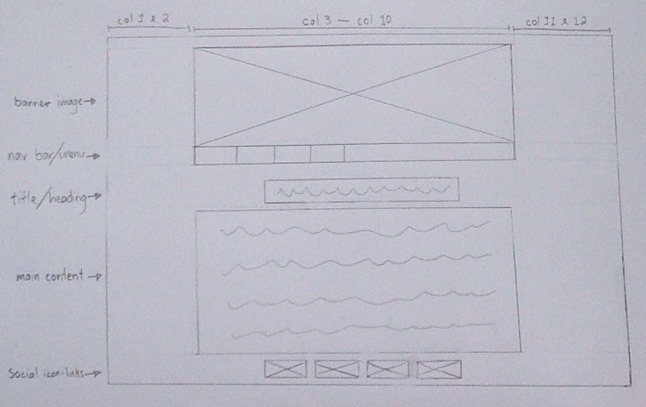
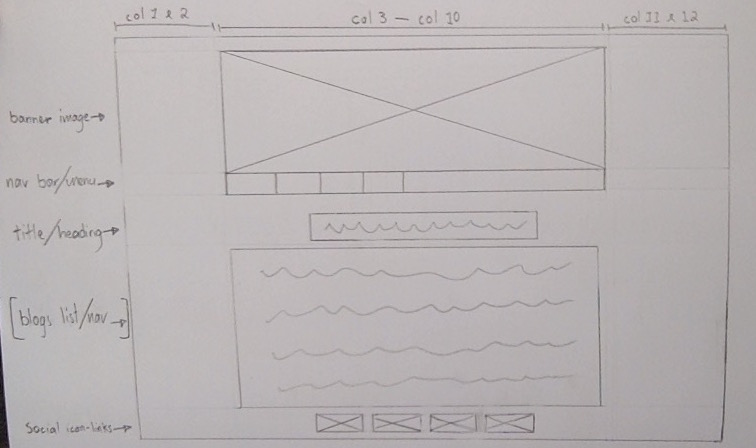
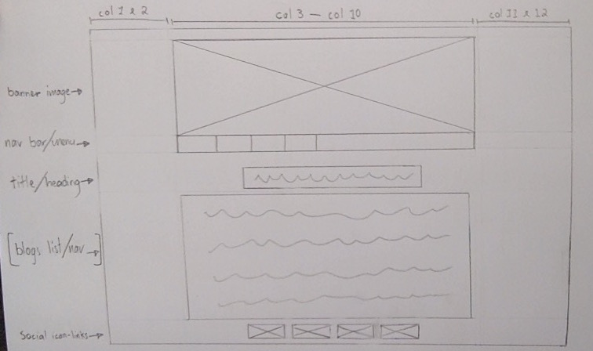
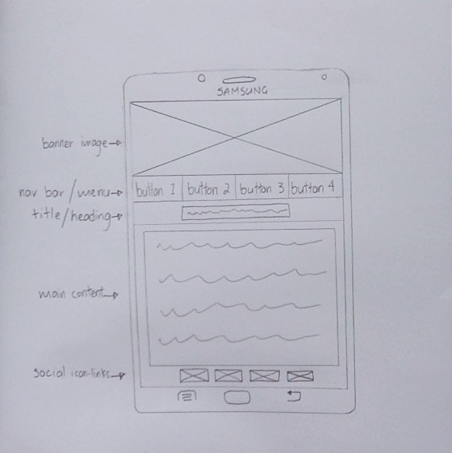

JAVASCRIPT BASICS
Technical Blog
23.MAR.2016
How does Javascript compare to HTML and CSS?
In my first Tech blog I used an analogy of a house which described HTML as the foundation, walls, floor, roof of a house and CSS as the design, style, colour and layout of the house. Javascript can be thought of as the interactive/functional features of the house like the electric garage door, the tv, the lights, the oven etc.
In short, I think JavaScript is a way of interacting and getting the computer to perform tasks and also creates interaction between the computer and the user.
Explain control flow and loops using an example process from everyday life, for example 'waking up' or 'brushing your teeth’?
The control flow is the order in which your code is processed or executed. The name control flow is quite specific to its purpose, it controls the process flow of how your code is executed. JavaScript does this by starting from top to bottom. I’ll use the process of brushing your teeth as an example.
1. Pick up tooth brush
2. Pick up tooth paste
3. Apply tooth paste to brush
4. Put tooth paste back
5. Brush teeth
6. Rinse mouth with water
7. Put tooth brush back
If we were to change the order of the process it wouldn’t work or achieve what it was intended to do. For example we can’t apply tooth paste if we have no tooth brush.
Explain what functions are and why they are useful?
JavaScript functions are blocks of pre written code designed to perform a certain task. Using functions can save you a lot of time, for example if you use a function that does something at the beginning of your code and further down you realise you need the same or similar function, instead of rewriting the function you can call the function that you created earlier by typing the functions name.
 



The aspects of your wireframes you found difficult to implement, and why
The most difficult thing I found was sticking to my wireframe design all together. I keep changing my mind about what I wanted. I'm such a fusy person when it comes to how things look... my visual design skills or a lack of them are definitely work in progress. If I was to single out one aspect that frustrated me the most was definitely trying to implement the 'selection-list' feature from this Zen Garden example. The hardest part was trying to center the list on the page, with the '......' content fading behind the 'date' on the right side of the list.